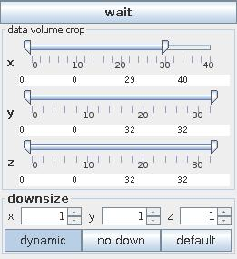
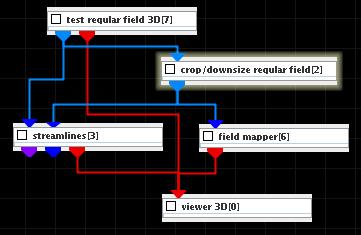
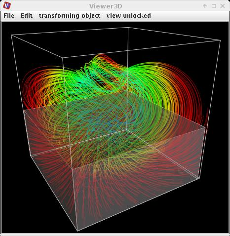

CROP/DOWNSIZE REGULAR FIELD
The crop/downsize regular field module reduces the size of a structured field by extracting specified ranges of its dimensions or resamples a field using a scaling factor.
Input data
The input field is regular.
Output data
The output field is regular. There is a geometry object.
Computation parameters

If wait button is pressed processing is stopped. By default the button is not pressed and changes of parameters are processed immediately.
The data volume crop sliders select the geometric extents of the regular field, i.e. lower and upper bound array indices in their respective dimensions.
The downsize scaling factors can be adjusted using the downsize spinners. It reduces the size of the field, saving processing time and memory by "thinning out" the data. Default downsize values depend on the dimensions of the input field and are chosen automatically.
If dynamic button is pressed output is generated every time the downsize parameter changes. No down button cancels downsize.
Default button adjusts the default values for downsize.
Example

Choose test regular field 3D from test objects library, crop/downsize regular field from data filters library, field mapper module from general mappers and accessories library and streamlines from 3D field mappers library and connect them.
In the crop/downsize regular field module GUI change the upper bound value of z data volume crop, for instance z_upper = 20.
Increase the integration step and steps range parameters of the streamlines module.
